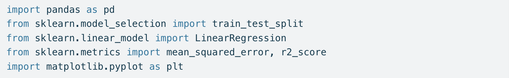
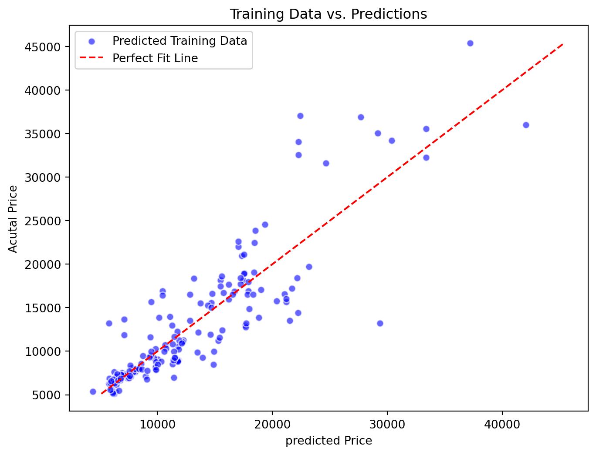
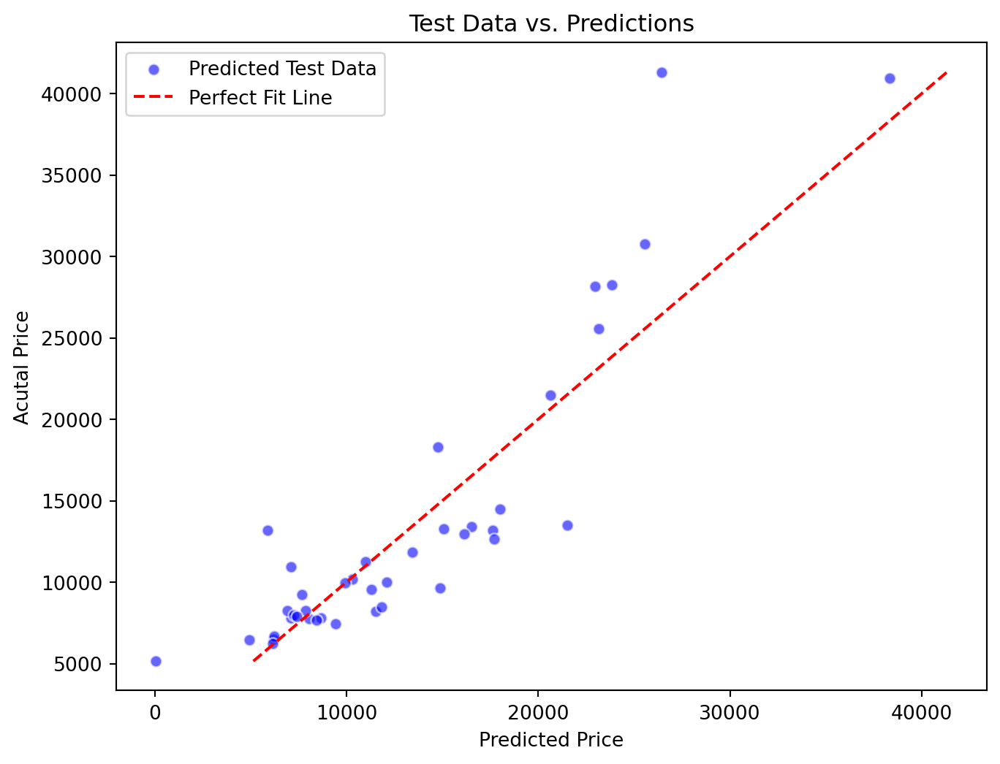

Linear Regression - Car Price Prediction And Data Analysis
code
Analysis
Author
Preethi Ganta
Published
July 29, 2024
Problem Statement
Let’s consider a dataset for used cars. As a Data Scientist, you are given the task of creating an automated system that predicts the selling price of cars based on various features, such as horsepower, peak RPM, curb weight, etc.
By using this features we can estimate the price for the car Here we can see the dataFrame containing accurate historical data, which includes features . Our task is to use this data that can predict the prices of any cars
Import Libraries
Code
import pandas as pdfrom sklearn.model_selection import train_test_splitfrom sklearn.linear_model import LinearRegressionfrom sklearn.metrics import mean_squared_error, r2_score ,mean_absolute_errorimport matplotlib.pyplot as pltimport seaborn as sns
 Here we can see the data below about the car data
class normalized-losses make fuel-type aspiration num-of-doors \
0 3 ? alfa-romero gas std two
1 3 ? alfa-romero gas std two
2 1 ? alfa-romero gas std two
3 2 164 audi gas std four
4 2 164 audi gas std four
body-style drive-wheels engine-location wheel-base ... engine-size \
0 convertible rwd front 88.6 ... 130
1 convertible rwd front 88.6 ... 130
2 hatchback rwd front 94.5 ... 152
3 sedan fwd front 99.8 ... 109
4 sedan 4wd front 99.4 ... 136
fuel-system bore stroke compression-ratio horsepower peak-rpm city-mpg \
0 mpfi 3.47 2.68 9.0 111 5000 21
1 mpfi 3.47 2.68 9.0 111 5000 21
2 mpfi 2.68 3.47 9.0 154 5000 19
3 mpfi 3.19 3.40 10.0 102 5500 24
4 mpfi 3.19 3.40 8.0 115 5500 18
highway-mpg price
0 27 13495
1 27 16500
2 26 16500
3 30 13950
4 22 17450
[5 rows x 26 columns]
DataCleaning
Before using the any dataset we need to clean data.
Handling the missing values in the dataset
Replacing the ‘?’ with the Empty string
Convert columns with the data type object (string) to numeric if the column contains numeric values. Otherwise, leave the column as object (string). For example, some columns contain ‘?’. These columns should be converted to numeric after cleaning the data.
Code
df.replace("?",'', inplace=True)print(df)feature_columns = ['horsepower','bore','stroke','normalized-losses', 'price', 'peak-rpm']# Convert selected columns to numeric (if they aren't already)for col in feature_columns: df[col] = pd.to_numeric(df[col], errors='coerce')df = df.assign(price=df['price'].fillna(df['price'].mean()))df = df.assign(horsepower=df['horsepower'].fillna(df['horsepower'].mean()))df = df.assign(bore=df['bore'].fillna(df['bore'].mean()))
class normalized-losses make fuel-type aspiration num-of-doors \
0 3 alfa-romero gas std two
1 3 alfa-romero gas std two
2 1 alfa-romero gas std two
3 2 164 audi gas std four
4 2 164 audi gas std four
.. ... ... ... ... ... ...
200 -1 95 volvo gas std four
201 -1 95 volvo gas turbo four
202 -1 95 volvo gas std four
203 -1 95 volvo diesel turbo four
204 -1 95 volvo gas turbo four
body-style drive-wheels engine-location wheel-base ... engine-size \
0 convertible rwd front 88.6 ... 130
1 convertible rwd front 88.6 ... 130
2 hatchback rwd front 94.5 ... 152
3 sedan fwd front 99.8 ... 109
4 sedan 4wd front 99.4 ... 136
.. ... ... ... ... ... ...
200 sedan rwd front 109.1 ... 141
201 sedan rwd front 109.1 ... 141
202 sedan rwd front 109.1 ... 173
203 sedan rwd front 109.1 ... 145
204 sedan rwd front 109.1 ... 141
fuel-system bore stroke compression-ratio horsepower peak-rpm \
0 mpfi 3.47 2.68 9.0 111 5000
1 mpfi 3.47 2.68 9.0 111 5000
2 mpfi 2.68 3.47 9.0 154 5000
3 mpfi 3.19 3.40 10.0 102 5500
4 mpfi 3.19 3.40 8.0 115 5500
.. ... ... ... ... ... ...
200 mpfi 3.78 3.15 9.5 114 5400
201 mpfi 3.78 3.15 8.7 160 5300
202 mpfi 3.58 2.87 8.8 134 5500
203 idi 3.01 3.40 23.0 106 4800
204 mpfi 3.78 3.15 9.5 114 5400
city-mpg highway-mpg price
0 21 27 13495
1 21 27 16500
2 19 26 16500
3 24 30 13950
4 18 22 17450
.. ... ... ...
200 23 28 16845
201 19 25 19045
202 18 23 21485
203 26 27 22470
204 19 25 22625
[205 rows x 26 columns]
Data Information
We could see that class, normalized-losses, wheel-base, length, width, height, curb-weight, engine-size, bore,stroke, compression-ratio, horsepower, peak-rpm, city-mpg, highway-mpg, price are numeric whereas make, fuel-type, aspiration,num-of-doors, body-style, drive-wheels, engine-location, engine-type, num-of-cylinders, fuel-system are objects( string) possibly categorical columns.
The relationship between two numerical features such as price and hoursepower etc. can be numerically expressed using a measure called correlation coefficient, which can be computed using the .corr method from the pandas’ library.
Code
correlation_coefficient_columns = ['normalized-losses','wheel-base','length','width','height','curb-weight','engine-size','bore','stroke','compression-ratio','horsepower','peak-rpm','city-mpg','highway-mpg']for col in correlation_coefficient_columns: correlation_coefficient = df['price'].corr(df[col])print(f"Correlation between price and {col}: {correlation_coefficient}")
Correlation between price and normalized-losses: 0.20325417074184235
Correlation between price and wheel-base: 0.5831681499789547
Correlation between price and length: 0.6829862954386219
Correlation between price and width: 0.728698817593184
Correlation between price and height: 0.13438751871051807
Correlation between price and curb-weight: 0.820824733354729
Correlation between price and engine-size: 0.8617522436859723
Correlation between price and bore: 0.5323000195387406
Correlation between price and stroke: 0.08213793359382601
Correlation between price and compression-ratio: 0.07099036277901553
Correlation between price and horsepower: 0.7579169537498175
Correlation between price and peak-rpm: -0.10096015614268217
Correlation between price and city-mpg: -0.6674492651600004
Correlation between price and highway-mpg: -0.6905257341183486
We could observe from the values above, that there’s a high correlation between price and engine-size but less correlation between price and highway-mpg.
We can use the .corr() method to show the correlation coefficients between all pairs of numerical columns.
In the correlation matrix, we observe that features like horsepower, engine-size, curb-weight, and width have high correlations with the price, close to +1, indicating a strong positive linear relationship. On the other hand, length is highly correlated with wheel-base, suggesting that including both in the model might lead to redundant information.
If length and wheel-base provide overlapping information, adding both to the model may not improve its predictive power. Instead, the model might perform better with a combination of features that provide complementary information. For instance, wheel-base and bore might together explain different aspects of price variation that length does not capture.
Therefore, the features horsepower, engine-size, curb-weight, width, wheel-base, and bore are chosen to build a more effective linear regression model.
Linear Regression using a Single Feature
Code
df = df.assign(price=df['price'].fillna(df['price'].mean()))df = df.assign(horsepower=df['horsepower'].fillna(df['horsepower'].mean()))df = df.assign(bore=df['bore'].fillna(df['bore'].mean()))print(df)X = df[['horsepower', 'engine-size','curb-weight', 'width','wheel-base','bore','length']] # Independent variablesy = df['price'] #Dependent variables#print(y)# Split the data into training and validation setsX_train, X_val, y_train, y_test = train_test_split(X, y, test_size=0.2, random_state=42)#print(X_train)#print(X_val)model = LinearRegression()model.fit(X_train, y_train)# Make predictions on the training setX_train_pred = model.predict(X_train)# Make predictions on the testing setX_test_pred = model.predict(X_val)#print(y_train_pred , y_test_pred)# Calculate Mean Squared Errortrain_mse = mean_squared_error(y_train, X_train_pred)test_mse = mean_squared_error(y_test, X_test_pred)# Calculate Mean Absolute Errortrain_mae = mean_absolute_error(y_train, X_train_pred)test_mae = mean_absolute_error(y_test, X_test_pred)# Calculate R² Scoretrain_r2 = r2_score(y_train, X_train_pred)test_r2 = r2_score(y_test, X_test_pred)
class normalized-losses make fuel-type aspiration num-of-doors \
0 3 NaN alfa-romero gas std two
1 3 NaN alfa-romero gas std two
2 1 NaN alfa-romero gas std two
3 2 164.0 audi gas std four
4 2 164.0 audi gas std four
.. ... ... ... ... ... ...
200 -1 95.0 volvo gas std four
201 -1 95.0 volvo gas turbo four
202 -1 95.0 volvo gas std four
203 -1 95.0 volvo diesel turbo four
204 -1 95.0 volvo gas turbo four
body-style drive-wheels engine-location wheel-base ... engine-size \
0 convertible rwd front 88.6 ... 130
1 convertible rwd front 88.6 ... 130
2 hatchback rwd front 94.5 ... 152
3 sedan fwd front 99.8 ... 109
4 sedan 4wd front 99.4 ... 136
.. ... ... ... ... ... ...
200 sedan rwd front 109.1 ... 141
201 sedan rwd front 109.1 ... 141
202 sedan rwd front 109.1 ... 173
203 sedan rwd front 109.1 ... 145
204 sedan rwd front 109.1 ... 141
fuel-system bore stroke compression-ratio horsepower peak-rpm \
0 mpfi 3.47 2.68 9.0 111.0 5000.0
1 mpfi 3.47 2.68 9.0 111.0 5000.0
2 mpfi 2.68 3.47 9.0 154.0 5000.0
3 mpfi 3.19 3.40 10.0 102.0 5500.0
4 mpfi 3.19 3.40 8.0 115.0 5500.0
.. ... ... ... ... ... ...
200 mpfi 3.78 3.15 9.5 114.0 5400.0
201 mpfi 3.78 3.15 8.7 160.0 5300.0
202 mpfi 3.58 2.87 8.8 134.0 5500.0
203 idi 3.01 3.40 23.0 106.0 4800.0
204 mpfi 3.78 3.15 9.5 114.0 5400.0
city-mpg highway-mpg price
0 21 27 13495.0
1 21 27 16500.0
2 19 26 16500.0
3 24 30 13950.0
4 18 22 17450.0
.. ... ... ...
200 23 28 16845.0
201 19 25 19045.0
202 18 23 21485.0
203 26 27 22470.0
204 19 25 22625.0
[205 rows x 26 columns]
Training MSE: 13273431.422094898
Testing MSE: 15453517.236073863
===========================================
Training MAE: 2417.6617006861425
Testing MAE: 2773.3099288861613
=============================================
Training R²: 0.7691692520480402
Testing R²: 0.8018070302642768
Ploting
Code
# Plottingplt.figure(figsize=(8,6))# Plot training data and regression lineplt.scatter(X_train_pred,y_train ,color='blue', edgecolor='w', alpha=0.6, label='Predicted Training Data')plt.plot([min(y_train), max(y_train)], [min(y_train), max(y_train)], color='red', linestyle='--', label='Perfect Fit Line')# Add title and labelsplt.title('Training Data vs. Predictions')plt.xlabel('predicted Price')plt.ylabel('Acutal Price')plt.legend()plt.show()plt.figure(figsize=(8,6))# Plot training data and regression lineplt.scatter(X_test_pred,y_test,color='blue', edgecolor='w', alpha=0.6, label='Predicted Test Data')plt.plot([min(y_test), max(y_test)], [min(y_test), max(y_test)], color='red', linestyle='--', label='Perfect Fit Line')# Add title and labelsplt.title('Test Data vs. Predictions')plt.xlabel('Predicted Price')plt.ylabel('Acutal Price')plt.legend()plt.show()


Code
import statsmodels.api as smimport numpy as np# Generate some sample datanp.random.seed(0)X = df[['horsepower', 'engine-size','curb-weight', 'width','wheel-base','bore','length']] # Independent variablesy = df['price'] # Add a constant to the independent variables (for the intercept)X = sm.add_constant(X)# Fit the modelmodel = sm.OLS(y, X).fit()# Print the summaryprint(model.summary())
OLS Regression Results
==============================================================================
Dep. Variable: price R-squared: 0.779
Model: OLS Adj. R-squared: 0.771
Method: Least Squares F-statistic: 99.18
Date: Wed, 28 Aug 2024 Prob (F-statistic): 4.39e-61
Time: 20:15:54 Log-Likelihood: -1974.6
No. Observations: 205 AIC: 3965.
Df Residuals: 197 BIC: 3992.
Df Model: 7
Covariance Type: nonrobust
===============================================================================
coef std err t P>|t| [0.025 0.975]
-------------------------------------------------------------------------------
const -2.484e+04 1.45e+04 -1.715 0.088 -5.34e+04 3717.930
horsepower 33.0124 14.024 2.354 0.020 5.355 60.670
engine-size 97.1710 13.980 6.951 0.000 69.601 124.741
curb-weight 3.1358 1.712 1.832 0.069 -0.241 6.512
width 179.4978 278.687 0.644 0.520 -370.095 729.091
wheel-base 86.6198 108.685 0.797 0.426 -127.716 300.956
bore -1491.4314 1321.909 -1.128 0.261 -4098.341 1115.478
length -6.6857 59.743 -0.112 0.911 -124.503 111.131
==============================================================================
Omnibus: 32.150 Durbin-Watson: 1.027
Prob(Omnibus): 0.000 Jarque-Bera (JB): 125.484
Skew: 0.508 Prob(JB): 5.64e-28
Kurtosis: 6.696 Cond. No. 1.44e+05
==============================================================================
Notes:
[1] Standard Errors assume that the covariance matrix of the errors is correctly specified.
[2] The condition number is large, 1.44e+05. This might indicate that there are
strong multicollinearity or other numerical problems.